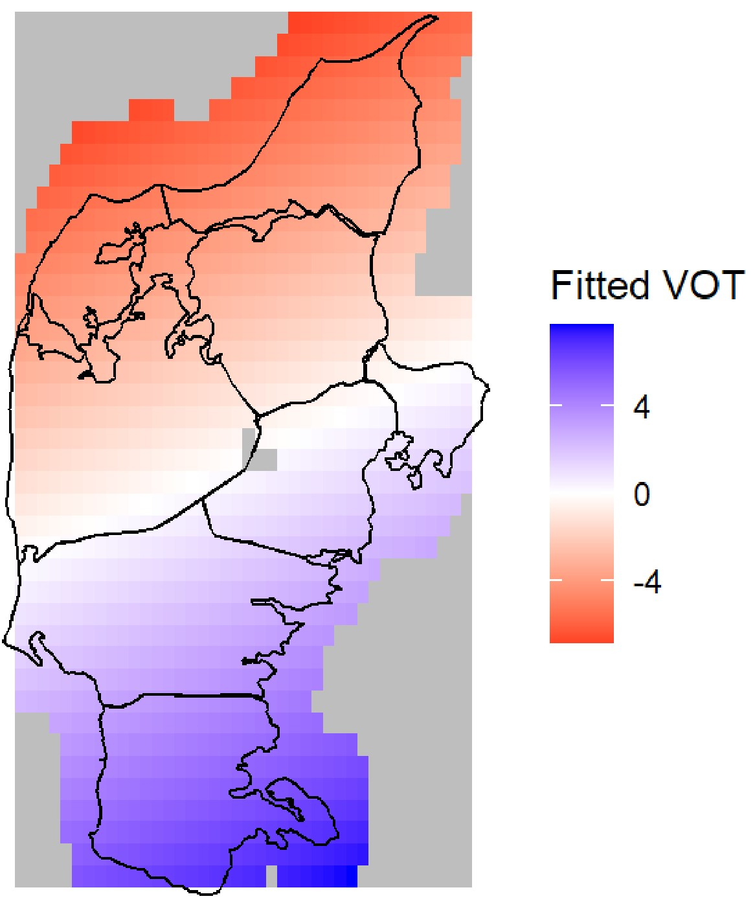
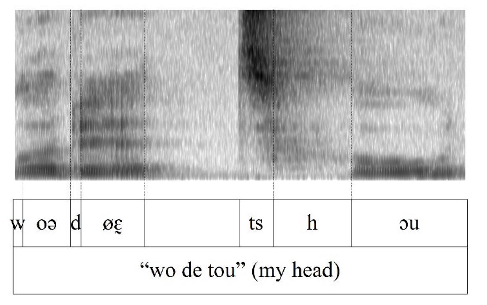
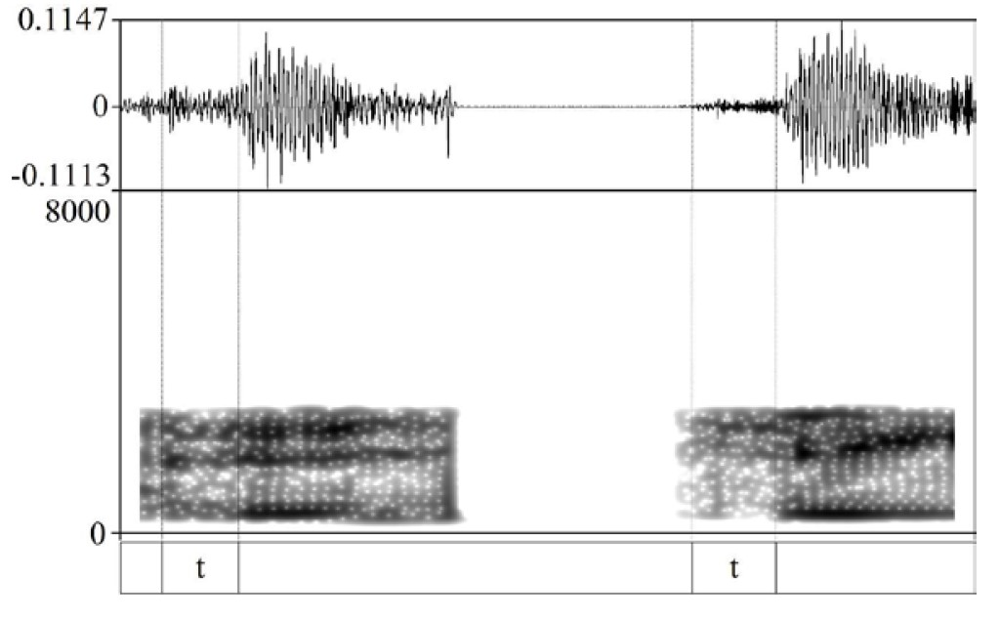

Here you’ll find short descriptions of the goals and results of the various projects I’m working on now or have worked on in the past. Some of these projects tend to overlap.
Danish stops
I’ve been fascinated with these sounds since I was first exposed to phonetics, and they remain my greatest research love. I wrote my dissertation about Danish stops, and by now I’ve investigated them from many different angles.
My colleagues Camilla Søballe Horslund, Henrik Jørgensen, and I published a paper in Laboratory Phonology about intervocalic stop voicing patterns in Danish based on a corpus of spontaneous speech. The results show that voicing is suppressed intervocalically in both the unaspirated stops /b d g/ and the aspirated stops /p t k/ in almost all contexts, and that when voicing does occur, it patterns with other lenition phenomena. We compare these results to the predictions of different phonological theories of laryngeal contrast, and suggest that the results are most in line with Articulatory Phonology.

In a paper out in Journal of Phonetics, I looked into the spectral characteristics of aspirated stop releases using the same spontaneous speech corpus. I confirmed that /t/ invariably has an affricated release (which is generally taken for granted in the literature), but also that affrication typically does not last throughout the release and that it gradually gives way to aspiration throughout the release, probably suggesting that it is not an affricate in the sense of e.g. Stevens (1993). /k/ releases are often affricated to varying degrees and in ways that are highly affected by the coarticulary context, while /p/ releases are usually dominated by aspiration in most contexts. I argue that, in spite of their differences, the stops likely behave as a class from an articulatory perspective.

I’ll cover all of this further below, but my interest in this topic has also led me to look at regional variation in how the stops are realized and how they have changed over time in traditional dialects of Jutland; colleagues and I have looked into the synchronic and diachronic phonology of so-called stop gradation, i.e. the somewhat notorious alternations between stops and semivowels in Danish; other colleagues and I have proposed underlying representations of the Danish stops couched in a representational framework we call Q-CV; I’ve looked into how the realization of coronal stops in Danish affect the Mandarin Chinese affricates produced by Danish L2 learners; and I’ve explored how the bandpass filters of landline telephones and other telephone connections affect speaker-specific acoustic properties of stop releases.
Many open questions remain when it comes to Danish stops, and I’m certainly not done with them. One question that I’m actively pursuing in collaboration with James Kirby and Nicolai Pharao is the extent to which their particular laryngeal constellation affect the F0 of surrounding vowels, and whether this is affected by higher-level prosodic structure. I am also currently collaborating with Francesco Burroni on the the relative timing of articulatory gestures in stop–vowel sequences in Danish.
Functional data analysis and aperiodic spectra
For various reasons, I’ve grown a little disillusioned with the use of spectral moments to characterize the shape of spectra during (especially) voiceless portions of speech. So I’ve adopted different methods from functional data analysis to analyze patterns of variation in spectral shape.

In a paper in Journal of Phonetics, I use function-on-scalar regression models (an extension of generalized additive models) to analyze how spectral shape changes over time in stop releases, which allows for simply using spectral shape as a dependent variable in a statistical model.
In another paper published in the ICPhS proceedings, I use functional principal component analysis to determine the main sources of variance in spectral shape in stop releases. There are more details in Chapter 6 of my dissertation. This is something I really want to explore further but haven’t yet – I have several ideas about how to compare how spectral moments, DCT coefficients, and functional PCA categorizes spectral shape.

Danish consonant gradation
Consonant gradation is a notorious phonological pattern and/or historical development in Danish whereby consonants developed radically different realizations in strong and weak prosodic positions. This e.g. results in the voiceless unaspirated velar stop [k] alternating with the semivowels [ɪ̯] and [ʊ̯]. This has traditionally been assumed to be a synchronically active phonological pattern, where in this case the semivowels are derived from underlying stops through a series of abstract rules.
My colleagues Camilla Søballe Horslund Marqvorsen, Henrik Jørgensen, and I published a paper in Acta Linguistica Hafniensia arguing that this analysis is excessively abstract and cannot be learned by children from the input available to them, and instead we propose a simpler reorganization of the Danish phonemes. In a forthcoming paper, we give a diachronic account of consonant gradation, seeking to explain how the alternations came about within the framework of Evolutionary Phonology; this builds on Chapter 3 of my dissertation. Another ongoing project is to discuss our analysis in the light of early analyses in the structuralist glossematic framework from the early 20th century. We have presented this, but have yet to write anything up.
In another forthcoming paper, I explore the variable outcomes of consonant gradation in the traditional dialects spoken in Jutland, and how these outcomes relate to variability in the fine phonetic detail of stop realization. I have presented this research on different occasions.
Traditional dialects of Jutland
I have done a lot of work on regional phonetic variability in the traditional dialects of Danish spoken in Jutland, mostly based on a large legacy corpus of sociolinguistic interviews carried out in the early 1970s. My colleague Yonatan Goldshtein and I spent a lot of time trawling through the metadata of this corpus and published a paper summarizing the available materials.

Using these materials, I did large-scale corpus studies of voice onset time, stop closure voicing, and stop release affrication in the traditional dialects of Jutland, using generalized additive models to map the geographic variation in these phonetic parameters. Chapter 6 of my dissertation covers most of this work, although the study on closure voicing has not yet been published (for more, see these slides).
Consonant-intrinsic F0
At the moment, one of my main research interests is the effect of consonant-voicing or other laryngeal features of consonants on fundamental frequency of their immediate environment. In collaboration with James Kirby, Sireemas Mapsong, and Francesco Burroni, I am looking at how different kinds of glottal and voiceless codas affect the F0 of preceding syllables in several different languages, focusing first on the South-East Asian language Eastern Kmhmu’ in a paper that is currently in review, and in ongoing work also on Thai, Mon, and German.
I am also working on how the aspiration-based laryngeal contrast in Danish stops affects F0 of following vowels. This was investigated in a few studies in the 1970s and 1980s, but a lot of open questions remain.
At Speech Prosody in Leiden, 2024, I am co-hosting a special session on segment–intrinsic F0 together with my colleague Menghui Shi.
Tools for processing and visualizing acoustic data
I like to build different tools in the R environment that can ease or automate aspects of acoustic analysis and visualization.
The most ambitious of these is an R package called getVOT which seeks to partially automate the process of annotating landmarks for measuring voice onset time (both positive and negative). In this tutorial, I explain how to use it and how it works.
I developed another R package for making nice Praat-style plots combining waveforms, spectrograms, annotations, and other derived acoustic measures. This tool has gradually grown in scope, and now also has functionality for annotating small snippets of sound within R, embedding sound in Praat-style plots, and making animations. A forthcoming paper presents the package in more detail.
I have also built the R package phonfeatures which automatically adds columns with phonetic/phonological features to a data frame with phonetic transcriptions. I am continuously working on the package emuhelpeR which provides various convenience functions for working with the phonetic database system EMU-SDMS, particularly integrating it with the voice quality processing scripts in PraatSauce.

I’m working with Jonathan Harrington and Johanna Cronenberg on turning previous course notes and teaching materials on the EMU-SDMS into an online book-length tutorial. Chapters are being published here as they become available.
For a forthcoming paper written with Kathleen Jepson and John Mansfield, I developed a tool in R to automatically identify instances of sustained stylized prosody in corpora of Australian aboriginal narratives.
I’ve been working on a general pipeline for quickly processing acoustic data in R (calling scripts to do forced alignment, measuring VOT, getting voice quality measures, creating an EMU database). I have a lot of convenience functions in various scattered around various public data analysis scripts for e.g. generating multitaper spectra in bulk and visualizing functional PCA, spatial generalized additive models, and growth curve analysis outputs. I’ve written a tutorial on generating multitaper spectra in R which might be published on Linguistics Methods Hub at some point.

Q–CV
My PhD advisors Janet Grijzenhout and Bert Botma and I have been working on an extension of the representational Q-theory which we call Q–CV. The basic idea is that the subsegmental units from Q-theory are reinterpreted as components which are already encoded as something like basic major class features. In a recent paper, we derive a great range of phonological stop contrasts using Q–CV and show how phonological processes can be shown in the framework.
Danish interactional linguistics and online syntax
As an undergraduate student, I spent a lot of time with the Danish Talk-in-Interaction research group at Aarhus University. We were (and they still are) building towards writing a grammar of Danish as used in conversation that relies on both usage-based linguistics, interactional linguistics, and conversation analysis.

My first foray into research at all was when Tina Mølgaard and I wrote about the prosody of the discourse particle nå (similar to ‘oh’ in English), and how the interactional function of nå is determined on the basis of its prosody by listeners. Later, during my MA studies, I wrote about copula reduction and deletion and how to interpret the phenomenon within the theoretical framework of Semiotic Grammar.
My most extensive contribution was probably my Master’s thesis which was later published in shortened form in Nordic Journal of Linguistics, which was a corpus study of the use of the prefield (forfelt) in conversational speech. Danish is a verb-second language, meaning that the second phrase in sentences is the finite verb, but the first phrase (the prefield) can be any other constituent. I showed that the prefield is remarkably inflexible – more than 50% of sentences start with det ‘it, that’, så ‘then’, or jeg ‘I’. It appears that speakers are using this to their advantage, such that speakers will start sentences with det before having determined the basic structure of the sentence.

Debonding of bound morphemes
Another early research interest of mine was the rare historical process of debonding, i.e. when bound morphemes turn into free lexical items. I published a corpus study in Scandinavian Studies in Language of the use of free and bound kæmpe ‘giant’ in Danish – kæmpe used to be a concrete noun, but came to be used as a prefix indicating size. This prefix then debonded and came to be used as a free-standing adjective with the same meaning as the prefix. This follows previous studies showing similar effects on Dutch reuze and German Riesen, also meaning ‘giant’.
L2 acquisition of Mandarin Chinese by L1 Danish speakers
I was a member of the short-lived Danish-accented Chinese research group headed by Marjoleine Sloos at Aarhus University as an undergraduate student. We published a paper as a group outlining Danish learners’ trouble with intrinsic tone duration and final lengthening in Mandarin.

I later wrote my Bachelor’s thesis (which was published as a book chapter) about Danish learners’ pronunciation of the Mandarin coronal stops and affricates. Given that Danish has a saliently affricated alveolar stop [tʰ] and Mandarin has a three-way distinction between an aspirated stop [tʰ], a plain affricate [ts] and an aspirated affricate [tsʰ], this poses a particular challenge for Danish learners.
Telephonic bandpass filters and high frequencies
My first ever journal article was a Danish paper about the effects of various telephonic bandpass filters on the acoustics of stop affrication. Bandpass filters will remove the lowest and highest frequencies of the spectrum. A lot has been written about how this affects fundamental frequency and low formants, but relatively little has been written about how it affects higher frequencies in e.g. fricatives. This paper illustrates the effect and does not offer much in the way of quantification of the effect.

Danish spelling
I have never done any actual research into the notoriously dense and unsystematic Danish spelling system, but as a thought experiment, I wrote a blog post outlining what a shallow Danish orthography could look like. I’m including it here because this blog post ended up getting some media attention.